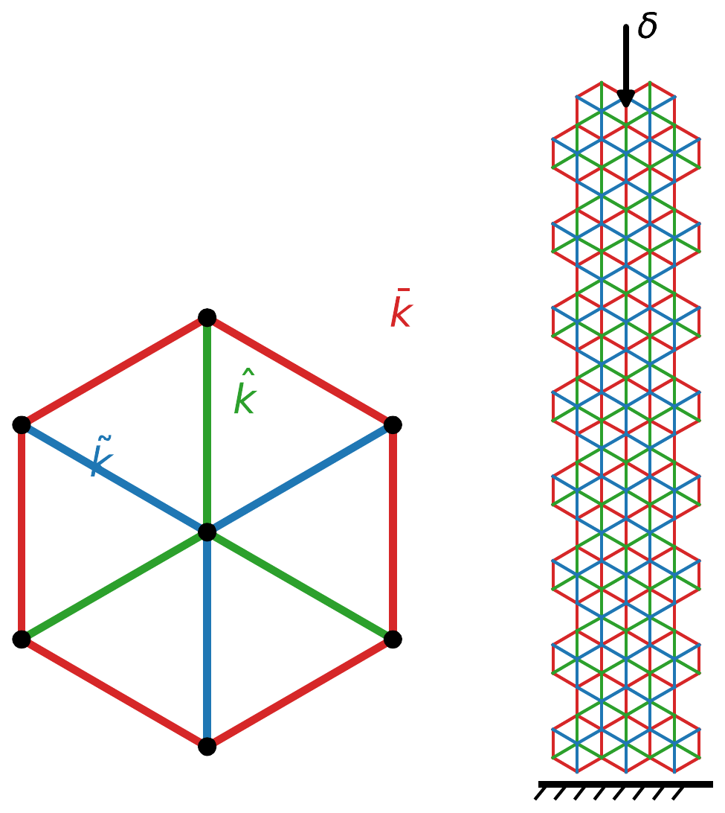
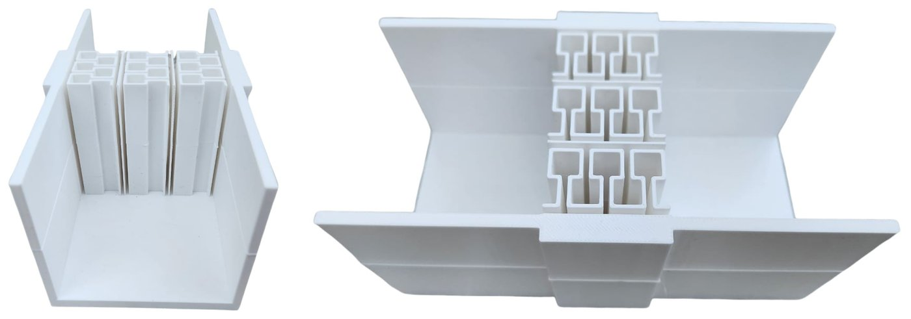
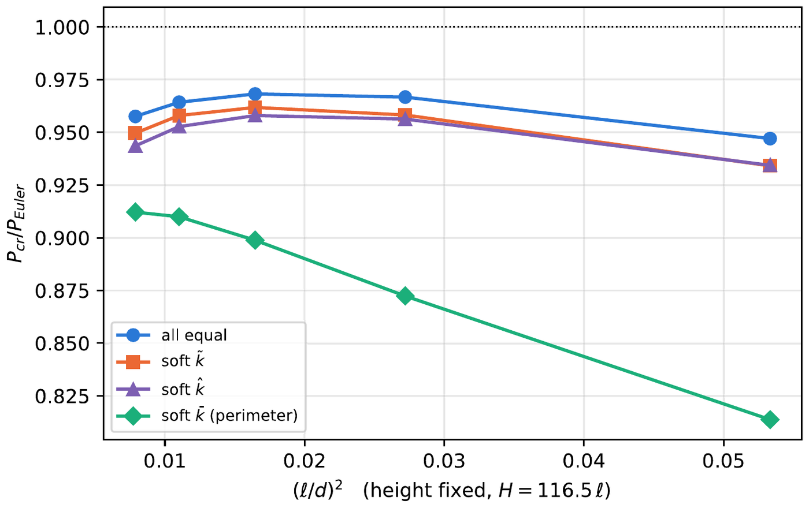
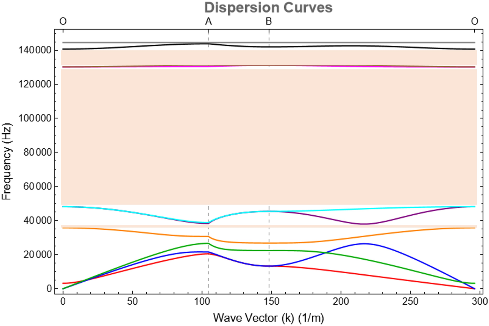
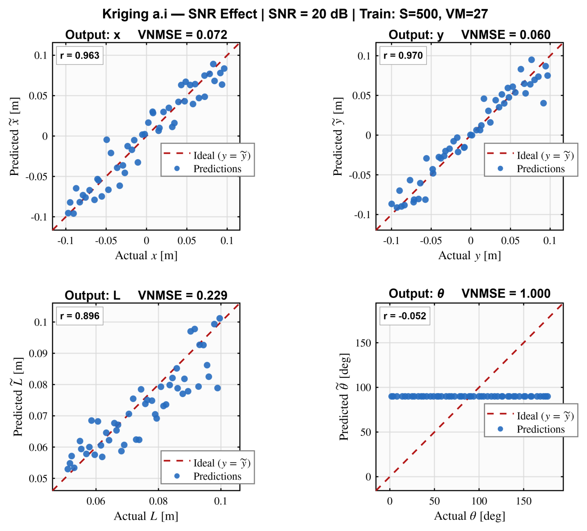
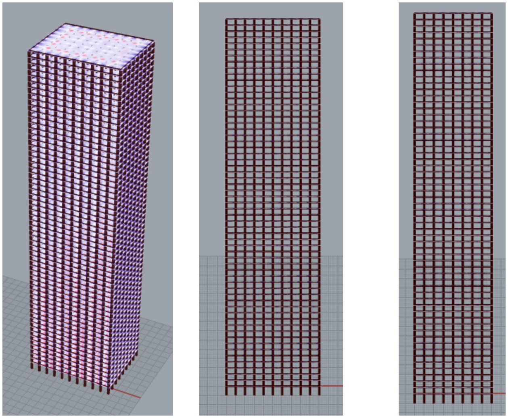
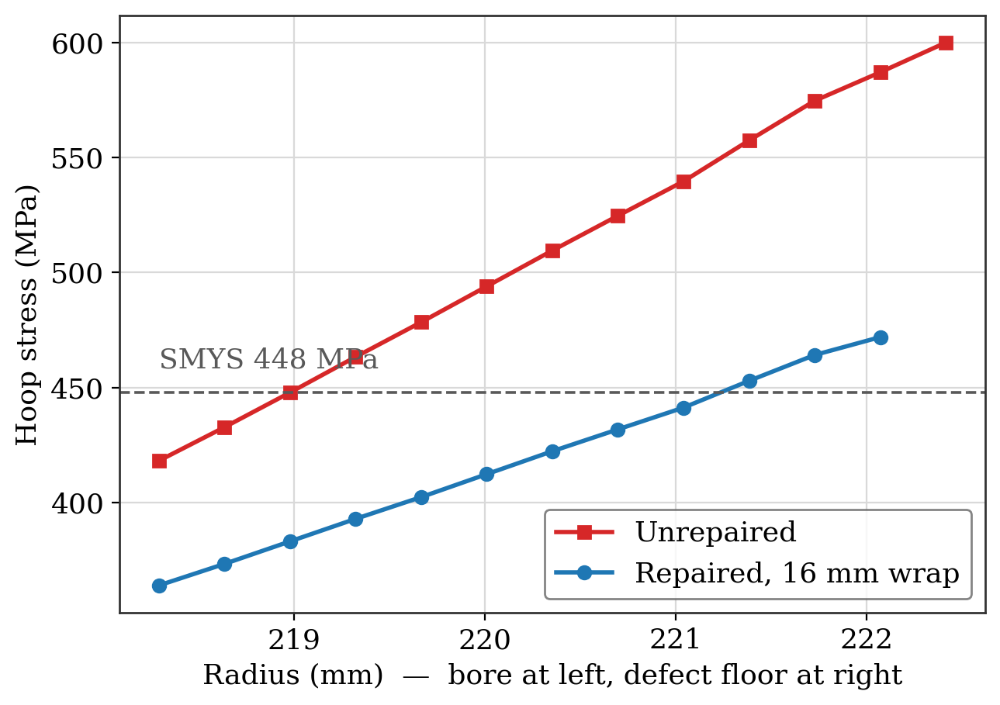
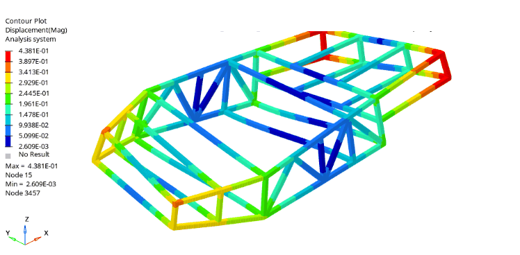
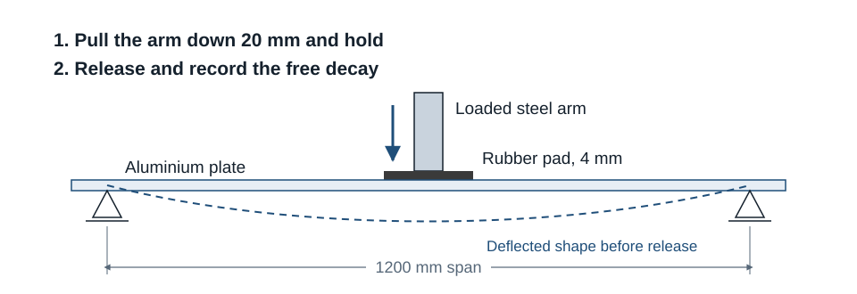
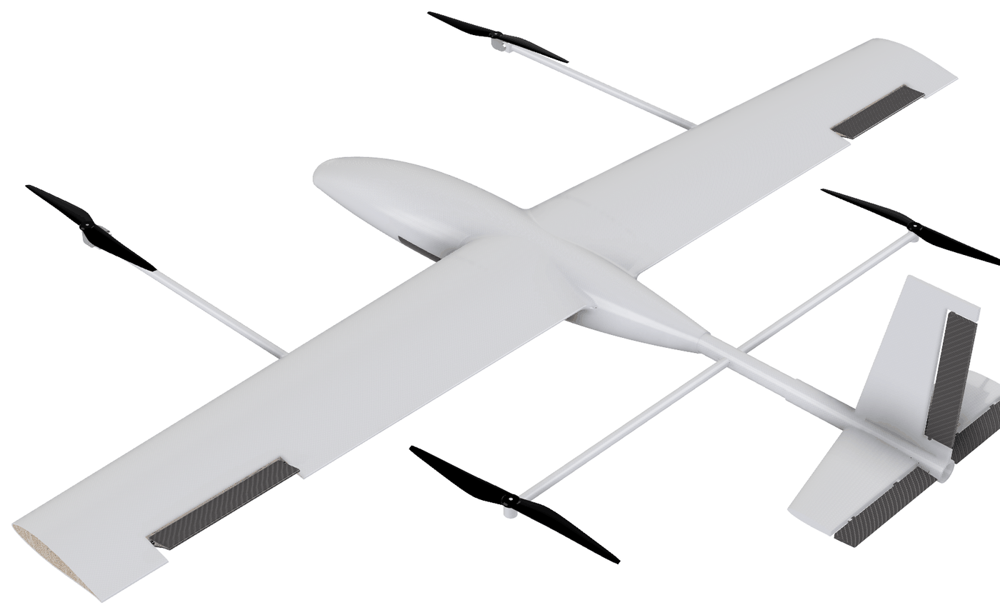

Mechanical engineer · Erasmus Mundus scholar · Nantes, France
Muhammad Talha
I work across computational and experimental mechanics: architected materials and waves, structural stability and dynamics, and structural engineering.
I am completing the Erasmus Mundus Joint Master in Mechanics of Sustainable Materials and Structures (MS²) at TU Dortmund, the University of Trento and École Centrale de Nantes. Before that I spent two years in industry on structural analysis: reduced order models of large composite structures, and dynamic, buckling and aeroelastic stability analyses. I like problems that go from a hand calculation to a validated model and a physical part, and I am looking for a funded PhD position in structural and computational mechanics.


Fields I work in
Choose one to filter the projectsMetamaterials and waves
Band gaps, acoustic metasurfaces, micromorphic and second gradient continua.
Stability, dynamics and vibration
Buckling and size effects, modal and frequency response analysis, damping and decay.
Structural analysis and reduced order models
Finite element analysis of complete structures, beam stick reduced order models, and dynamic, buckling and aeroelastic stability.
Structural integrity and composites
Burst strength, composite repair, damage identification and failure criteria.
Data driven methods
Kriging, neural networks and other surrogates for inverse problems.
Design, build and test
From hand sizing and CAD to printed parts, instrumented rigs and test correlation.
Projects
12 projects with methods, figures and resultsResearch and projects in the master
2025 to 2026
Size effects in buckling of lattice columns
Columns cut from a hexagonal lattice with three tunable bar stiffnesses, used to separate surface and bulk size effects in buckling.
Acoustic metasurface: from paper to printed part
Rebuilt a published metasurface in COMSOL, explained most of the gap between its simulation and measurement, and 3D printed the design.

A unit cell with a 92% complete band gap
A titanium unit cell that blocks elastic waves in every direction from 48.2 to 130.2 kHz, with band tracking and mesh studies to back it up.

Wave dispersion in a relaxed micromorphic continuum
Derived the six coupled wave equations by hand, verified them in Mathematica, and computed dispersion curves and closed form cutoff frequencies.

Machine learning for microwave crack detection
Compared Kriging, a neural network, SVR and random forest for locating and sizing a crack in a concrete column from scattered field data.

Parametric study of a 200 m framed tube tower
A parametric Grasshopper and Karamba3D model comparing uniform, corner-reinforced and height-graded columns for drift against steel use.
Industry
2023 to 2025Freelance analysis projects
2026
Composite repair of a corroded subsea pipeline
Hand methods, a layered cylinder model and Abaqus burst analyses, validated against published tests of corroded and repaired pipes.

Vibration of a kit car space frame
A beam element model of a welded space frame, used to find its resonances and to show how engine mount phasing decides which ones are excited.

Reproducing a plate release test
Rebuilt a reference Abaqus model in Inventor Nastran and matched its stiffness, first frequency and free decay after release.
Bachelor
2019 to 2023
Eagle Eye: a tilt-rotor VTOL spraying UAV
An eight member team design of a 6.9 kg tilt-rotor VTOL UAV for autonomous crop spraying, sized from first principles.
Electromagnetic impact testing device
Designed, built and instrumented a lab scale device that launches a projectile electromagnetically for controlled, repeatable impacts.
Coursework
MS² modules, linked to the projects they led toSemester 1: TU Dortmund, Germany
Winter 2025/26
- Advanced Continuum MechanicsVariational principles, kinematics of deformable continua and linear and nonlinear 3D elasticity.8 ECTS
- Enriched Continua and MetamaterialsMechanical metamaterials, band gaps, Bloch Floquet analysis and micromorphic continua for wave control.
- Nonlinear Structural AnalysisPlastic load capacity of sections and frames, and nonlinear finite element analysis in ANSYS.6 ECTS
- Engineering MathematicsTensor algebra and analysis, and the partial differential equations of mathematical physics.5 ECTS
- Structural Systems in Engineering PracticesEfficient structural systems, form finding, topology optimisation and parametric design. Elective.
Semester 2: University of Trento, Italy
Spring and summer 2026
- Stability of StructuresBuckling of columns, plates and frames, the elastica, and divergence and flutter of non-conservative systems.
- Modeling and Simulation of StructuresAdvanced finite elements for beams, plates and shells, plasticity, dynamics and user material subroutines.6 ECTS
- Mechanics of Solids and Structures under Extreme ConditionsLarge deformations of natural and 3D printed architected solids under impact, fracture and waves, with a printing and testing lab.6 ECTS
- Machine Learning for Wireless Structural Health MonitoringLearning by example for regression and classification, applied to wireless monitoring of structures.
- MetastructuresPeriodic metamaterials and metastructures for controlling elastic and acoustic waves. Elective.
- Risk Analysis and Structural ReliabilityProbability and random processes, structural reliability methods (FORM, SORM, system reliability) and Monte Carlo simulation for engineering risk assessment. Elective.6 ECTS
Semester 3: École Centrale de Nantes, France
Autumn 2026, in progress
- Homogenization Methods for Materials and StructuresUpscaling methods for the equivalent properties of heterogeneous materials and slender structures.5 ECTS
- Coupled Problems in MechanicsVariational and computational methods for thermo-mechanical and poro-elastic coupling.6 ECTS
- Mechanics of Porous MediaThermo-hydro-mechanical behaviour of saturated and partially saturated porous media.5 ECTS
- Design and Behaviour of Modern ConcreteMicrostructure, shrinkage, creep and fracture of concrete, and mix design.5 ECTS
- Earthquake EngineeringSeismic hazard and risk, dynamics of single and multi degree of freedom structures, modal and response spectrum analysis, soil dynamics and earthquake resistant design to Eurocode 8. Elective.5 ECTS
Experience
then remotely
Design and Structural Analysis Engineer
NaqCoDE Technologies, Islamabad. Structural analysis team
- Built beam stick reduced order models of large composite structures from detailed shell models and checked them against the full models.
- Ran flutter (SOL 145, PK method), divergence and control reversal (SOL 144) analyses in MSC Nastran and Flightloads.
- Ran fluid structure interaction in Ansys, modal and buckling analyses in Nastran and multibody analysis in MSC Adams, backed by hand calculations.
- Wrote the team's aeroelastic procedure and presented a training session on beam stick modelling. More
Freelance structural analysis
Independent projects for clients
- Burst assessment of a corroded subsea pipeline and its composite repair, vibration of a kit car space frame, and reproduction of a plate release test in Inventor Nastran. See projects
Technical Lead, Rapid Prototyping and Design
NexiraX, hybrid
- Lead an additive manufacturing initiative delivering CAD models and functional prototypes for external clients, from process parameters to part verification.
Management Trainee Officer
Bestway Cement Limited, Pakistan
- Maintenance and reliability assessment of slurry pumps and rotary equipment.
Education
expected
M.Sc. Mechanics of Sustainable Materials and Structures (MS²)
Erasmus Mundus Joint Master, full EU scholarship, cohort of 32 students from 24 countries. Overall grade 1.3 on the German scale after two semesters.
Triple degree: M.Sc. Mechanical Engineering (TU Dortmund), Laurea Magistrale in Ingegneria Civile, LM-23 (Trento), Master en Génie Civil (Centrale Nantes).
B.E. Mechanical Engineering
National University of Sciences and Technology (NUST), Islamabad. CGPA 3.78/4.00, final year 3.92. Grade A in Introduction to Finite Element Analysis, Mechanical Vibrations, Mechanics of Materials I, Machine Design I, Numerical Methods and both parts of the final year project.
Other projects: brake disc dynamometer test rig (thermal and structural FEA, fatigue based sizing), and a sensor based assistive walking stick.
Simulation
Abaqus, MSC Nastran, Patran and Flightloads, COMSOL Multiphysics, Ansys Mechanical and Fluent, MSC Adams, LS-DYNA, HyperMesh, Inventor Nastran, Karamba3D
Programming
Python (NumPy, SciPy, scikit-learn, PyTorch), MATLAB, Wolfram Mathematica, Git, LaTeX
Design and fabrication
SolidWorks, Creo, Fusion 360, Autodesk Inventor, Rhino Grasshopper, GD&T, FDM 3D printing, composite lay-up
Languages
English C1 (IELTS), German B1, French A1, Italian A1, Urdu native
Get in touch
I am interested in funded PhD and research positions in structural and computational mechanics: architected materials and metamaterials, structural stability and dynamics, structural integrity and reliability, and data driven methods for structures. My full CV and the project reports are available on request.
- talhasalam1033@gmail.com
- Muhammad Talha
- Based in
- Nantes, France